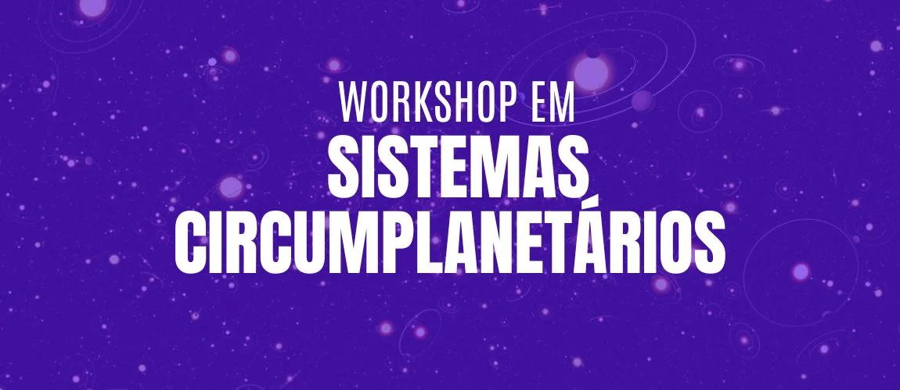

Scientific meetings and workshops
Workshop on
Circumplanetary Systems
The Group of Origin and Dynamics of Satellites (GODS), in partnership with Observatório Nacional (ON), organized the first Workshop on Circumplanetary Systems, an in-person event dedicated to the formation, evolution, and detection of satellites and rings in different planetary contexts.
The workshop brought together researchers and students interested in the dynamics, origins, and observations of circumplanetary systems, providing an opportunity for in-depth scientific exchange. The programme included scientific presentations, ongoing research projects, and dedicated sessions for collective discussion.
Visit the workshop website ↗